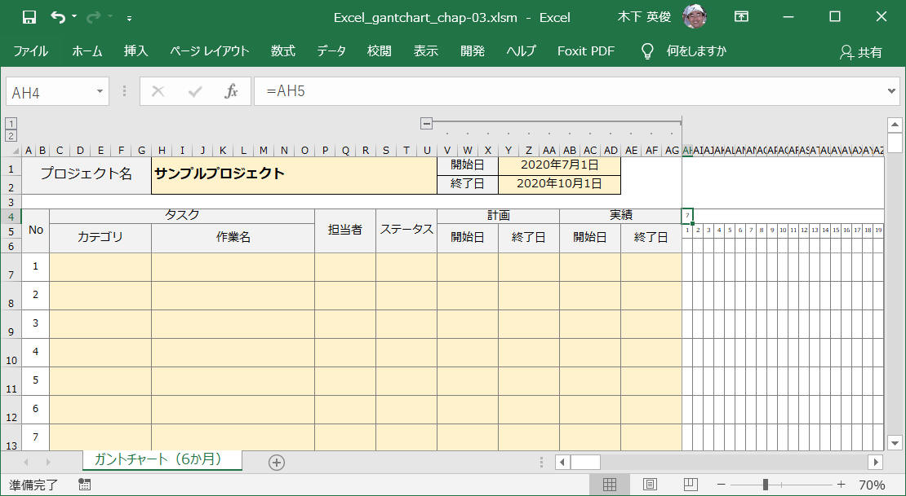
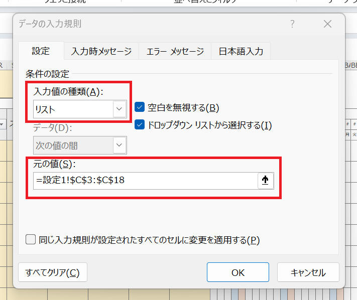

1. 機能概要
こんな感じの「Excelガントチャート」ツールを作っていきます。
[紹介ビデオ]
図．全体図

図．スケジュール更新をコンテキストメニューから行う様子

図．設定１
図．設定２

「Excelガントチャート」を自作したので、以下でこのソフトウェアおよび作り方を紹介します。
仕事でもいろいろとガントチャートツールを利用しました。が、少しずつ何かが足りませんでした。
私が強く求めるのは以下のような機能でした。
これらの要望を満足する"Excelガントチャート"の実現を目指します。
こんな感じの「Excelガントチャート」ツールを作っていきます。
[紹介ビデオ]
図．全体図
図．スケジュール更新をコンテキストメニューから行う様子
図．設定１
図．設定２
VBA 無しで、まずはベース部分を作ってみます。
要求事項はこんな感じで。
カレンダーの月、日の部分は一旦空欄にしておきます。ここは次の章で作っていきます。
ここでは下図のような感じでレイアウトを作ってみました。
「カテゴリ」はグルーピングなどを意識した項目です。「大分類」「中分類」など複数列にしても良いかもしれません。
サンプル： ダウンロード
引き続き VBA 無しで、条件付き書式、excelのセルへの関数指定、などでさらにベース部分を作りこみしてみます。
最初に日を表示する部分の書式を変更します。
"セルの表示設定" を "日のみ"(d) にします。"=date(Y1)"
とすることでも同じことをできますが、後で示す曜日の実現でこのセルには年月日の全ての情報を持っていてほしいので、表示形式で"日のみ"の表示を実現します。

続いて、カレンダーの最も左側の日付を「開始日」と同じ日にします。
それ以降の日を、一つ左側のセルの翌日とします。
左側から２つ目のセルを設定したらドラッグでOKです。


次に月の部分を作ります。
月表示は以下の条件で行います。
・最も左側のセルは月を表示
・各月の１日に対応するセルは月を表示
・以上の条件以外、空欄
"セルの書式設定" を "月のみ"(m)とします。

一番左側のセルは、真下と同じ日付を代入、月をそのまま無条件で表示します。

それ以外のセルは、参照するセルを各セルの真下として、日付が１のときだけ日付を代入し、それ以外は空欄を代入します。

次に曜日表示です。こちらは全部のセルが同じ手順です。
真上のセルを参照し、「=TEXT(AH5, "AAA")」という式で曜日を計算して表示してくれます。
今のままでは月の切り替わり部分、最終セルの右側、に罫線がありません。
美しくないので、ここに罫線を自動追加されるように "条件付き書式" を設定します。
月部分の全セルを選択後、"条件付き書式"を設定します。


これで月の切り替わりに罫線が入りました。

同様に、最終列に罫線を加える作業をします。最終列のセルに "END" という表記を入れてこれをマークにして書式指定します。
この場合は右側に縦の罫線を追加します。

こういう書式設定を行いました。

最終列にも罫線が入りました。

こちらも条件付き書式を使って実現します。こちら比較的簡単なのでラフに記載します。
1. 条件付き書式で新しいルールを作成します。
色付けする範囲を選択後、条件付き書式から「新しいルール」を選択します。

2. ルールは「数式を使用して、書式設定をするセルを決定」とし、ルールを下図のように設定します。
5 の方のみを"$"で指定します。AHに"$"を付けてはいけません。
=TEXT(AH$5,"aaa")="土"
TEXT 関数で "aaa" の指定は曜日表記のところでも使用しました。便利なのでぜひ覚えていただきたいです。
セルの色は［書式(F)...］から水色を設定しました。
3. 「条件付き書式ルールの管理」から状態を確認すると、下図のようになっているはずです。
書式ルールの表示として「このワークシート」を選択してください。
適用先を色を付ける全ての範囲として、下図では、"$AH$5:$H$106" を設定できています。

4. 同様に日曜日も同じ手順で進めます。
書式設定の部分で "土" を "日" へ変更するだけなので、説明は割愛します。
サンプル： ダウンロード
引き続き VBA 無しで、条件付き書式、excelのセルへの関数指定、などでさらにベース部分を作りこみしてみます。
1. 「設定１」シートに「担当」一覧を準備します。
１行目を空欄のセルにしておくことをお勧めします。
2. 担当欄 のセルを設定します。
担当を入力するセルを全て選択した状態で Excel メニューから、"データ" > "データの入力規則" > "データの入力規則(V)..." をクリックします。
3. 表示したダイアログ画面へ下記のように入力後、［OK］ボタンをクリックします。
以上で設定を完了です。これで下図のようにセル上で担当を選択できるようになりました。
1. 「設定１」シートに「ステータス」一覧を準備します。
１行目を空欄のセルにしておくことをお勧めします。

2. ステータス欄 のセルを設定します。
ステータスを入力するセルを全て選択した状態で Excel メニューから、"データ" > "データの入力規則" > "データの入力規則(V)..." をクリックします。
3. 表示したダイアログ画面へ下記のように入力後、［OK］ボタンをクリックします。

以上で設定を完了です。これで下図のようにセル上でステータスを選択できるようになりました。
1. 「設定１」シートに「WBS終了判定」一覧を準備します。
［重要］必ず "ステータス" 一覧で設定したものと一致する名称を設定してください。
2. グレー化する対象の全セルを選択します。ここでは「$A$7:$HI$106」を選択します。
3. 条件付き書式で新しいルールを作成します。
色付けする範囲を選択後、条件付き書式から「新しいルール」を選択します。
4. ルールは「数式を使用して、書式設定をするセルを決定」とし、ルールを下図のように設定します。
設定との一致確認の方法として、ここでは COUNTIF 関数を使っています。
=COUNTIF(設定1!$D$3:$D$5,$S7)>=1
重要
"$S7" の部分について、S のみを"$"で指定します。7 に "$" を付けてはいけません。
セルの色は［書式(F)...］から 25% グレーを設定しました。
5. 「条件付き書式ルールの管理」から状態を確認すると、下図のようになっているはずです。
書式ルールの表示として「このワークシート」を選択してください。
適用先を色を付ける全ての範囲として、下図では、"$A$7:$HI$106" を設定しています。
土曜日、日曜日に色付けする方法とほとんど同じです。こちらも条件付き書式を使って実現します。
1. 「設定１」シートに祝日とする年月日一覧を準備します。

2. 条件付き書式で新しいルールを作成します。
色付けする範囲を選択後、条件付き書式から「新しいルール」を選択します。
3. ルールは「数式を使用して、書式設定をするセルを決定」とし、ルールを下図のように設定します。
祝日との一致確認の方法として、ここでは COUNTIF 関数を使っています。
=COUNTIF(設定1!$E$3:$E$311,AH$5)>=1
重要
"AH$5" の部分について、5 のみを"$"で指定します。AH に "$" を付けてはいけません。
セルの色は［書式(F)...］からオレンジ色を設定しました。

4. 「条件付き書式ルールの管理」から状態を確認すると、下図のようになっているはずです。
書式ルールの表示として「このワークシート」を選択してください。
適用先を色を付ける全ての範囲として、下図では、"$AH$5:$HI$106" を設定しています。
以上で祝日表示対応の設定を完了です。
計画、実績 の期間を入力したら、その内容に従ってガントチャート（図）を作図する処理を追加します。
VBA を使います。
1.
まずは基本的な部分から。
線を描画するには Shapes.AddLine という関数を使用することでできるようです。
そのまま直接使ってもよさそうですが、複数個所で使用しそうな気がするので、あとで一括して変更することを想定して標準モジュール内で関数化しました。
'
' 概要： 線を引く
'
' 引数： sheet 線を引くシート
' beginX 線の起点 X
' endX 線の起点 Y
' beginY 線の終点 X
' endY 線の終点 Y
' 戻値： shape 引いた線
Function drawLine(sheet As Worksheet, beginX As Long, beginY As Long, endX As Long, endY As Long) As shape
Set drawLine = sheet.Shapes.AddLine(beginX, beginY, endX, endY)
End Function
2.
計画の線を引く、実績の線を引く、という２つの関数を作成します。
開始と終了のセルを指定することでその間に線を描画する、という内容です。
ガントチャートシートのVBAとして記載します。
Private Const START_DATE_RANGE = 34
Private Const START_WBS = 7
Private Const GANTCHART_SHEET_NAME = "ガントチャート（6か月）"
Private Const SETTING_SHEET_1_NAME = "設定1"
Private Const SETTING_SHEET_2_NAME = "設定2"
Private Const NAME_KEIKAKU = "keikaku_"
Private Const NAME_JISSEKI = "jisseki_"
'
' 概要： 計画の線を一本引く
'
Private Function 計画の線を引く(startCell As Range, endCell As Range) As shape
Dim thisShape As shape
Set thisShape = drawLine(ThisWorkbook.ActiveSheet, startCell.Left + 2, startCell.Top + startCell.Height / 4, endCell.Left + endCell.Width, endCell.Top + endCell.Height / 4)
With thisShape.Line
.DashStyle = msoLineSolid
.ForeColor.ObjectThemeColor = ThisWorkbook.Sheets(SETTING_SHEET_2_NAME).Range("D3")
.ForeColor.TintAndShade = ThisWorkbook.Sheets(SETTING_SHEET_2_NAME).Range("D4")
.Weight = ThisWorkbook.Sheets(SETTING_SHEET_2_NAME).Range("D5")
End With
thisShape.name = NAME_KEIKAKU & startCell.Row
Set 計画の線を引く = thisShape
End Function
'
' 概要： 実績の線を一本引く
'
Private Function 実績の線を引く(startCell As Range, endCell As Range) As shape
Dim thisShape As shape
Dim settingSheet As Worksheet
Set settingSheet = ThisWorkbook.Sheets(SETTING_SHEET_2_NAME)
Set thisShape = drawLine(ThisWorkbook.ActiveSheet, startCell.Left + 2, startCell.Top + startCell.Height * 3 / 4, endCell.Left + endCell.Width, endCell.Top + endCell.Height * 3 / 4)
With thisShape.Line
.DashStyle = msoLineSolid
.ForeColor.ObjectThemeColor = settingSheet.Range("D6")
.ForeColor.TintAndShade = settingSheet.Range("D7")
.Weight = settingSheet.Range("D8")
.BeginArrowheadStyle = msoArrowheadOpen
.BeginArrowheadLength = msoArrowheadShort
.BeginArrowheadWidth = msoArrowheadNarrow
.BeginArrowheadLength = settingSheet.Range("D9").Value ' msoArrowheadShort
.BeginArrowheadWidth = settingSheet.Range("D10").Value ' msoArrowheadNarrow
.EndArrowheadStyle = msoArrowheadOpen
.EndArrowheadLength = msoArrowheadShort
.EndArrowheadWidth = msoArrowheadNarrow
.EndArrowheadLength = settingSheet.Range("D11").Value ' msoArrowheadShort
.EndArrowheadWidth = settingSheet.Range("D12").Value ' msoArrowheadNarrow
End With
thisShape.name = NAME_JISSEKI & startCell.Row
Set 実績の線を引く = thisShape
End Function
3.
ガントチャート全体を更新する関数（UpdateGantchar()）を作成します。
「線を一括削除する」関数の部分は後程。
'
' 概要： シート上の線(Line)を全て消す
'
Public Sub deleteAllLines()
Call 線を一括削除する(ThisWorkbook.Sheets(GANTCHART_SHEET_NAME))
End Sub
'
' 概要： ガントチャート表示の最初の日を日付型（Date）で取得します。
'
' 戻値： ガントチャート表示の最初の日を日付型（Date）で返します。
'
' 補足： CDate 関数は、文字列や数値などを日付型 (Date) に変換します。
' 下記では CDate(Cells(5,29)) としていますが、CDate(Cells(5,20)) でも同じ結果となります。
'
Function GetStartDate() As Date
GetStartDate = CDate(Cells(5, START_DATE_RANGE))
End Function
'
' 概要： ガントチャート表示の最後の日を日付型（Date）で取得します。
'
' 戻値： ガントチャート表示の最後の日を日付型（Date）で返します。
'
' 補足： CDate 関数は、文字列や数値などを日付型 (Date) に変換します。
' 最後の日の見つけ方を１行目の末尾セル（'END'が記載されている場所）として探しているので
' １行目の 'END'を消したり'END'以降に何かを書くと正常に動作しません。
'
Function GetEndDate() As Date
GetEndDate = CDate(Cells(5, getMaxCol(ThisWorkbook.ActiveSheet, 1)))
End Function
'
' 概要： ガントチャート表示を更新する
'
Public Sub UpdateGantchart()
Dim thisShape As shape
Dim keikaku_start As Long
Dim keikaku_end As Long
Dim jisseki_start As Long
Dim jisseki_end As Long
Dim retStart As Long
Dim retEnd As Long
' 全てのラインを消す
Call deleteAllLines
Dim i As Long
For i = START_WBS To getMaxRow(ThisWorkbook.ActiveSheet, 1)
' 計画を描画
If Cells(i, "V").Value <> "" And Cells(i, "Y") <> "" Then
retStart = SearchDate(Cells(i, "V"))
If retStart <> -1 Then
keikaku_start = retStart
Else
keikaku_start = START_DATE_RANGE
End If
retEnd = SearchDate(Cells(i, "Y"))
If retEnd <> -1 Then
keikaku_end = retEnd
Else
keikaku_end = getMaxCol(ThisWorkbook.ActiveSheet, 1)
End If
If (GetEndDate() - CDate(Cells(i, "V").Value) >= 0) And (CDate(Cells(i, "Y")) - GetStartDate() >= 0) Then
Set thisShape = 計画の線を引く(Cells(i, keikaku_start), Cells(i, keikaku_end))
End If
End If
' 実績を描画
If Cells(i, "AB") <> "" And Cells(i, "AE") Then
retStart = SearchDate(Cells(i, "AB"))
If retStart = -1 Then
jisseki_start = START_DATE_RANGE
Else
jisseki_start = retStart
End If
retEnd = SearchDate(Cells(i, "AE"))
If retEnd = -1 Then
jisseki_end = getMaxCol(ThisWorkbook.ActiveSheet, 1)
Else
jisseki_end = retEnd
End If
If (GetEndDate() - CDate(Cells(i, "AB").Value) >= 0) And (CDate(Cells(i, "AE")) - GetStartDate() >= 0) Then
Set thisShape = 実績の線を引く(Cells(i, jisseki_start), Cells(i, jisseki_end))
If retStart = -1 Then
With thisShape.Line
.BeginArrowheadStyle = msoArrowheadNone
End With
End If
If retEnd = -1 Then
With thisShape.Line
.EndArrowheadStyle = msoArrowheadNone
End With
End If
End If
End If
Next i
End Sub
下記部分について補足です。
ここは実績の線を引くときに、開始日や終了日がカレンダー範囲外であるときに矢印の形状を変更しています。
具体的には、例えば → を － へ変更することで終端でないことを表現しています。
If (GetEndDate() - CDate(Cells(i, "AB").Value) >= 0) And (CDate(Cells(i, "AE")) - GetStartDate() >= 0) Then
Set thisShape = 実績の線を引く(Cells(i, jisseki_start), Cells(i, jisseki_end))
If retStart = -1 Then
With thisShape.Line
.BeginArrowheadStyle = msoArrowheadNone
End With
End If
If retEnd = -1 Then
With thisShape.Line
.EndArrowheadStyle = msoArrowheadNone
End With
End If
End If
4.
上記関数を呼ぶためのトリガーとして、セルの値が更新されたときにガントチャート更新を実施するように Worksheet_Change() 関数を設定します。
具体的には、計画および実績の開始日・終了日を変更することでバーチャートが更新されるイメージです。
'
' 概要： セルに変化があった時のイベント処理
'
' 著作： 木下英俊
' 履歴：
' 2020-07-08 新規作成
'
Private Sub Worksheet_Change(ByVal Target As Range)
Application.EnableEvents = False
Application.ScreenUpdating = False
' レイアウト更新
Call UpdateLayout
' ナンバリングを更新
'Call UpdateNumbering
Call UpdateNumbering2
' ガントチャートを更新
Call UpdateGantchart
Application.EnableEvents = True
Application.ScreenUpdating = True
End Sub
描画済みのガントチャート(図)を全て削除する処理を追加します。画面更新するためには、一旦すべての表示済みの線を削除する必要があります。
「線を一括削除する」という関数を作成します。汎用性を考えて標準モジュールとして作成しています。これに伴って引数として対象のシートを渡す必要があります。
POINT
ガントチャート以外の図を消さないようにします。これを行わないとメモなどの図やテキストもすべて削除されてしまうので不便です。
Type が msoLine のものだけを削除する、という方法でとりあえず実現できてそうです。
'
' 概要： 線を一括削除する
'
' 引数： sheet 処理対象のシート
'
' 著作： 木下 英俊
' 履歴： 2020-07-07 新規作成
' 補足： Excel画面から手動で描画した線の Type は "msoAutoShape" になって区別できるようです。
' "msoAutoShape" の値は 1 です。
' 参考： https://docs.microsoft.com/ja-jp/office/vba/api/office.msoshapetype
'
Sub 線を一括削除する(sheet As Worksheet)
Dim shp As shape
For Each shp In sheet.Shapes
If shp.Type = msoLine Then
shp.Delete
End If
Next shp
End Sub
このプログラム中で描画する線は Type = msoLine (9) となります。
ちなみに Excel で通常描画する線の Type を確認してみたら msoAutoShape (1) でした。
このため上記プログラムで線を削除するとガントチャートで自動作成した線のみを削除できます。手動で描いた線は残るので便利で良い感じになりました。
ここまでの内容で、セルに直接日付を入力すればガントチャート上に線を描画できるように（たぶん）なったはずです。
あとはセルを選択してからコンテキストメニューをクリックする、という処理の部分だけですね。
独自の右クリックメニュー(コンテキストメニュー)を追加する方法を示します。
右クリックメニューとして「計画を設定」「実績を設定」を追加します。
合わせて、これらメニューを選択したときに対応する計画および実績のセルを更新します。
1.
まずはメニューを追加、削除する関数を作成します。
下記部分は 標準モジュール で作成する必要があります。
Sub SelectKeikakuPeriodMenu()
'MsgBox "計画を設定"
Call ThisWorkbook.ActiveSheet.UpdateKeikaku
End Sub
Sub SelectJissekiPeriodMenu()
'MsgBox "実績を設定"
Call ThisWorkbook.ActiveSheet.UpdateJisseki
End Sub
'
' 概要： コンテキストメニューを追加する
'
Sub AddOriginalMenu()
With CommandBars("Cell").Controls.Add(Type:=msoControlButton) '右クリックメニューを追加
.Caption = "計画を設定" ' 追加するメニューの名前
.OnAction = "SelectKeikakuPeriodMenu" ' メニューを押した時に実行されるマクロ名
.BeginGroup = True ' セパレータを追加
End With
With CommandBars("Cell").Controls.Add(Type:=msoControlButton) '右クリックメニューを追加
.Caption = "実績を設定" ' 追加するメニューの名前
.OnAction = "SelectJissekiPeriodMenu" ' メニューを押したときに実行されるマクロ名
End With
End Sub
'
' 概要： コンテキストメニューを削除する
'
Sub DeleteOriginalMenu() 'マクロ名
On Error Resume Next ' エラーでも次の行へ...
CommandBars("Cell").Controls("計画を設定").Delete
CommandBars("Cell").Controls("実績を設定").Delete
End Sub
2.
続いて、コンテキストメニューを実際に追加する部分を作成します。
こちらはシート側の処理として作成します。
ワークシートを右クリックしたときの処理から関数 AddOriginalMenu を実行します。
'
' 概要： 選択状態のセルが下記条件を満足するかを確認する。
' (1) 選択は１行のみであること
' (2) ガントチャート表示エリア内であること
'
' 戻値： True 表示エリア内
' False 表示エリア外
'
Private Function JudgeSelectObjectAndArea() As Boolean
JudgeSelectObjectAndArea = False
' セルが選択されている？
If TypeName(Selection) = "Range" Then
' 選択範囲は１行？ 複数行ならNG
If Selection.Rows.Count = 1 Then
' 選択範囲の最も左側は指定範囲内？
If Selection(1).Column >= START_DATE_RANGE Then
' 選択範囲の最も右側は指定範囲内？
If Selection(Selection.Count).Column <= getMaxCol(ThisWorkbook.ActiveSheet, 1) Then
' 選択範囲は条件を満足する
JudgeSelectObjectAndArea = True
End If
End If
End If
End If
End Function
'
' 概要： 右クリック時のイベント処理
'
' 履歴：
' 2020-07-08 新規作成
'
Private Sub Worksheet_BeforeRightClick(ByVal Target As Range, Cancel As Boolean)
' オリジナルメニューを削除
Call DeleteOriginalMenu
' 右クリックエリアがカレンダー内なら、オリジナルメニューを追加
If JudgeSelectObjectAndArea() = True Then
Call AddOriginalMenu
End If
End Sub
JudgeSelectObjectAndArea() の判定があるので、不適切なセル選択を行っている場合はオリジナルメニューを表示しません。
3.
続いて、関数 UpdateKeikaku() と UpdateJisseki() を作ります。
'
' 概要： 日付表示範囲を探索して、指定セルと同じ日付のセルを探してその位置を返す
'
' 引数： dateCell： 探索する日付を表記している Cell
'
' 戻値： 1以上の値 ： 見つけたセルの水平位置
' -1 ： 該当セル無し
'
Private Function SearchDate(dateCell As Range) As Long
Dim i As Long
Dim maxCol As Long
Debug.Print "dateCell.value = "; dateCell.Value;
maxCol = getMaxCol(ThisWorkbook.ActiveSheet, 1)
'Debug.Print "maxCol = "; maxCol;
For i = START_DATE_RANGE To maxCol
'Debug.Print Cells(5, i).Value
If Cells(5, i).Value = dateCell.Value Then
SearchDate = i
Exit For
End If
Next i
If i > maxCol Then
SearchDate = -1
End If
End Function
'
' 概要： 日付表示範囲から、指定する水平位置の日付情報を取得する
'
' 引数： position： 水平位置
'
' 戻値： 指定位置の日付情報
' "" 指定位置が欄外の場合、"" を返す。
'
Private Function GetDate(position As Long) As String
' 日付表示範囲であることを確認
If position >= START_DATE_RANGE And position <= getMaxCol(ThisWorkbook.ActiveSheet, 1) Then
GetDate = Cells(5, position)
Else
GetDate = ""
End If
End Function
'
' 概要： 選択されているセル情報に従って "計画" を更新する
'
' 詳細： 選択セルの情報に従って"計画"を更新します。
' 選択セルが適切な位置であるときのみ実施します。
' 選択セルが適切でない場合、"計画"の更新を行いません。
'
' 補足： "Selection(1)" で選択している最初のセルを返します。
' "Selection(Selection.Count)" で選択している最後のセルを返します。
' "Selection(1).Column" で選択している最初のセル（左上）の列番号を返します。
' "Selection(1).Row" で選択している最初のセル（左上）の行番号を返します。
'
Public Sub UpdateKeikaku()
Application.EnableEvents = False
Application.ScreenUpdating = False
Dim thisShape As shape
' 選択セルを確認
If JudgeSelectObjectAndArea() = True Then
Call 名称指定で図を削除する(ThisWorkbook.ActiveSheet, NAME_KEIKAKU & Selection(1).Row)
' 計画セルを更新
Cells(Selection.Row, "V").Value = GetDate(Selection(1).Column)
Cells(Selection.Row, "Y").Value = GetDate(Selection(Selection.Count).Column)
Set thisShape = 計画の線を引く(Selection(1), Selection(Selection.Count))
'Call UpdateGantchart
End If
Application.EnableEvents = True
Application.ScreenUpdating = True
End Sub
'
' 概要： 選択されているセル情報に従って "実績" を更新する
'
' 詳細： 選択セルの情報に従って"実績"を更新します。
' 選択セルが適切な位置であるときのみ実施します。
' 選択セルが適切でない場合、"実績"の更新を行いません。
'
' 補足： "Selection(1)" で選択している最初のセルを返します。
' "Selection(Selection.Count)" で選択している最後のセルを返します。
' "Selection(1).Column" で選択している最初のセル（左上）の列番号を返します。
' "Selection(1).Row" で選択している最初のセル（左上）の行番号を返します。
'
Public Sub UpdateJisseki()
Application.EnableEvents = False
Application.ScreenUpdating = False
' 選択セルを確認
If JudgeSelectObjectAndArea() = True Then
Call 名称指定で図を削除する(ThisWorkbook.ActiveSheet, NAME_JISSEKI & Selection(1).Row)
' 計画セルを更新
Cells(Selection.Row, "AB").Value = GetDate(Selection(1).Column)
Cells(Selection.Row, "AE").Value = GetDate(Selection(Selection.Count).Column)
Set thisShape = 実績の線を引く(Selection(1), Selection(Selection.Count))
'Call UpdateGantchart
End If
Application.EnableEvents = True
Application.ScreenUpdating = True
End Sub
こちらは標準モジュール側へ実装しました。
'
' 概要： 名前を指定して図を削除する
'
' 引数： sheet 処理対象のシート
' name 図の名称（Shape.Name）
'
' 著作： 木下 英俊
' 履歴： 2020-07-07 新規作成
'
Sub 名称指定で図を削除する(sheet As Worksheet, name As String)
Dim shp As shape
For Each shp In sheet.Shapes
If shp.name = name Then
shp.Delete
End If
Next shp
End Sub
これで大体完成です。
エクセルワークブックを閉じる際の後処理を実装します。
・独自のコンテキストメニューを削除します。
同様に、別のエクセルブックを使用するなどによりデアクティブになった際の処理を実装します。
・独自のコンテキストメニューを削除します。
1.
ThisWorkbook の処理として以下を実装します。
この処理を行わないと、無関係な Excel ファイルを開いたときにも独自メニューを表示してしまいます。
Private Sub Workbook_BeforeClose(Cancel As Boolean)
Call DeleteOriginalMenu
End Sub
Private Sub Workbook_WindowDeactivate(ByVal Wn As Window)
Call DeleteOriginalMenu
End Sub
2.
ガントチャートシートの処理として以下を実装します。
この処理を行わないと、無関係なシートを表示したときに独自メニューを表示してしまいます。
'
' 概要： このシートがアクティブになった時のイベント処理
'
Private Sub Worksheet_Activate()
Application.EnableEvents = False
Application.ScreenUpdating = False
' 表示を”標準”に
ActiveWindow.View = xlNormalView
' ガントチャートを更新
Call UpdateGantchart
Application.EnableEvents = True
Application.ScreenUpdating = True
End Sub
'
' 概要： このシートがディアクティブになった時のイベント処理
' オリジナルメニューの削除を行います。
'
Private Sub Worksheet_Deactivate()
' オリジナルメニューを削除
Call DeleteOriginalMenu
End Sub
"設定２" のキモは、シートで設定した設定値を画面上にプレビュー表示する、という部分だけですね。
"設定２" のシート用に下記 VBA プログラムを準備するだけです。
Private Sub Worksheet_Activate()
Call UpdateColor
End Sub
Private Sub Worksheet_Change(ByVal Target As Range)
Call UpdateColor
End Sub
Private Sub UpdateColor()
On Error Resume Next ' エラーでも次の行へ...
Dim thisSheet As Worksheet
Dim thisShape As shape
Dim thisCell As Range
Set thisSheet = ThisWorkbook.Sheets("設定2")
Call 線を一括削除する(thisSheet)
' 計画線
Set thisCell = Range("E3").MergeArea
Set thisShape = drawLine(thisSheet, thisCell.Left + 2, thisCell.Top + thisCell.Height / 2, thisCell.Left + thisCell.Width - 2, thisCell.Top + thisCell.Height / 2)
With thisShape.Line
.ForeColor.ObjectThemeColor = Range("D3").Value
.ForeColor.TintAndShade = Range("D4").Value
.Weight = Range("D5").Value
End With
' 実績線
Set thisCell = Range("E6").MergeArea
Set thisShape = drawLine(thisSheet, thisCell.Left + 2, thisCell.Top + thisCell.Height / 2, thisCell.Left + thisCell.Width - 2, thisCell.Top + thisCell.Height / 2)
With thisShape.Line
.ForeColor.ObjectThemeColor = Range("D6").Value
.ForeColor.TintAndShade = Range("D7").Value
.Weight = Range("D8").Value
.BeginArrowheadStyle = msoArrowheadOpen
.BeginArrowheadLength = msoArrowheadShort
.BeginArrowheadWidth = msoArrowheadNarrow
.BeginArrowheadLength = Range("D9").Value ' msoArrowheadShort
.BeginArrowheadWidth = Range("D10").Value ' msoArrowheadNarrow
.EndArrowheadStyle = msoArrowheadOpen
.EndArrowheadLength = msoArrowheadShort
.EndArrowheadWidth = msoArrowheadNarrow
.EndArrowheadLength = Range("D11").Value ' msoArrowheadShort
.EndArrowheadWidth = Range("D12").Value ' msoArrowheadNarrow
End With
' ObjectColor
For i = 3 To 18
Set thisShape = drawLine(thisSheet, Cells(i, "I").Left + 2, Cells(i, "I").Top + Cells(i, "I").Height / 2, Cells(i, "I").Left + Cells(i, "I").Width - 2, Cells(i, "I").Top + Cells(i, "I").Height / 2)
With thisShape.Line
.Weight = 5
.ForeColor.ObjectThemeColor = Cells(i, "H").Value
End With
Next i
End Sub
ＰＣに複数のディスプレイを接続して表示している場合に、バー（ガントチャート横棒）の表示位置がずれる場合があることを確認しています。
解決方法
Excelの［オプション］を開き、［全般］タブの［ユーザーインターフェイスのオプション］-［複数ディスプレイを使用する場合］の設定を「互換性に対応した最適化(アプリケーションの再起動が必要)」に設定して、Excel を再起動します。
私の環境ではこれで問題解決できました。お試しください。
以上の内容を全て（＋アルファ？）した Excelガントチャート を以下からダウンロードできます。
私自身が業務で使用することを目的にこれをブラッシュアップしているので、ここのが一番完成度が高いです。
サンプルプログラム ダウンロード
| 2023-10-01 | - | v1.05 |
| 微修正 | ||
| 2023-01-08 | - | v1.04 |
| 記事と実装を一致させる、"表示を縮小して全体を表示する"、ゴミ掃除、など微修正 | ||
| 2022-06-25 | - | v1.03 |
| - | MIT License へ変更 | |
| - | VBA のパスワードを外しました。 | |
| 2020-12-24 | - | v1.02 |
| - | [Bug-fix] 他のExcelシートのコンテキストメニューにこのガントチャートのオリジナルメニューが表示される場合がある、という不具合を修正。 | |
| 2020-07-09 | - | v1.01 |
| - | 祝日や任意の休みの表示に対応 | |
| - | １行または複数の行を切り取って別の場所へ挿入すると番号が崩れる、という課題を修正 | |
| 2020-07-07 | - | v1.00 |
| - | 新規作成 |
本ページの情報は、特記無い限り下記 MIT ライセンスで提供されます。
| 2024-07-25 | - | 「10._既知の問題」を記載 |
| 2024-05-09 | - | ビデオ、画像のサイズを調整 |
| 2023-10-01 | - | サンプルプログラムを v1.05 へバージョンアップ |
| 2023-01-08 | - | サンプルプログラムを v1.04 へバージョンアップ |
| 「4. 設定１ を作る」を記載 | ||
| 「9. 設定２ を作る」をサンプルプログラム v1.04 更新に合わせて余分なコードを削除 | ||
| 2022-06-25 | - | サンプルプログラムを v1.03 へバージョンアップ ライセンスをMITへ変更。VBAのパスワードを解除。 |
| 2022-05-19 | - | ７章、８章、９章 を追記 |
| 2022-05-18 | - | ５章、６章を追記 |
| - | 土日、祝日の色付けについて追記 |
|
| (ここを読んでくれる読者が若干名いるようなので少しがんばってみました。VBAの記述も少しずつ足してみたいです。) | ||
| 2021-09-05 | - | 紹介ビデオを追加 |
| - | 目次体裁を最新フォーマットへ更新 | |
| 2021-01-04 | - | 記事本文を更新 |
| 2020-12-24 | - | サンプルプログラムを v1.02 へバージョンアップ |
| 2020-07-11 | - | サンプルプログラムを v1.01 へバージョンアップ |
| 2020-07-07 | - | 新規作成 |